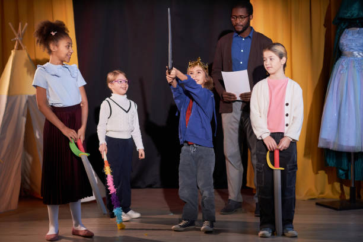

"Drama: An Outlet For expression and enhancing creativity"
Introduction
It's never too early to encourage a child's artistic endeavours. All children learn better when they play imaginatively, especially in their early years. Imaginary scenarious, acting out concepts, and role-playing assist young children in making sense of the world around them (AGDE, 2022). At child care we should promote theatrical theatre among the youngest students which makes the children more focused towards learning (AGDE, 2022). Creative theatre is a vital part of our early childhood education program because it gives childs the framework and encouragement they need to use their experiences to expand on what they already know. (HELEN EUSTAQUIO: MAY 6, 2021)

Resources, Materials, and Digital Technologies
Traditional Resources and Materials
- Hand and finger puppets: Simple puppets that children can manipulate, allowing them to act out stories, explore characters, and engag in imaginative play.
- Dresses and Props: Outfit and accessories that let child to dress up as different personas, encouraging role-playing and imaginative storytelling.
- Theater sets and stages: Theater sets and stages are compact, movable platforms or special areas set aside in the classroom for children to act out dramas or put on puppet shows.
Digital Technologies
- Video Recording Tools: Children may watch and consider their creativite work by using inexpensive cameras or tablets to film puppet shows or dramatic performances.
- Interactive Storytelling Platforms: Digital tools that provide interactive storytellign experiences, allowing childs to make decisions that affect the coursej of a story, are known as interactive storytelling platforms.
- Sound and Light Effects: Simple audio-visual instruments that can be utilized to improve performances, like LED lights for dramatic ligting or sound effects applications.
Learning Experiences by Age Group
0-2 Years:
- Puppet Play: As in this very early age a child cannot express themselves well so giving small puppets for them to play with can help them show their emotion by observing their reaction after they get puppets.
- Imitiative Play:Using small toys for playing encourage youngsters to imitate sounds, gestures, or feelings, this approach promotes early emotional express and communication in children.
- Interactive Storytelling: Using puppets to engage child in interactive storytelling allows them to touch or point at the puppets, fostering early involvement and comprehension.
2-3 Years:
- Observing Emotions with Puppets: Using toys to explore variousa emotions, such as pleased, sad or shocked, can help youngsters identify and communicate their own feelings.
- Role-Playing Simple Scenarios: Using theater, children can act out commonplace scenarios, such as going to the doctor or grocery story, to foster social understanding.
- Retelling Story: Retelling a narrative using puppets or theatrical play follows a reading and promotes creative interpretation, memory recall, and sequencing.
3-5 Years:
- Making Puppet Performances: Encouraging children's to make their own puppet performances, which involve building basic puppts, selecting a tale, and putting on a show for their classmates, promotes creativity and teamwork.
- Investing Various Roles and Characters: By allowing child's to engage in dramatic play, parents may foster empathy and the ability to consider other viewpoints. Examples, of these roles include heroes, villains, and animals.
- Using Digital Puppetry Tools: By providing basic digital tools, child can use technology to blend traditional play with the ability to animate puppets or tell digital stories.
6-8 Years:
- Script Writing and Performance: To combine literacy skills with artistic expression, older children can be encouraged to write short scripts and have them performed by puppets or in a dramatic play environment.
- Investigating Cultural Stories Through Theater: This project promotes cultural understanding and appreciation by using puppetry and theater to investigate and perform stories from many cultures.
- Video Production Projects: Video production projects involve teaching children's how to organize, act, and edit their own puppet shows or dramatic sequences. This fosters creativity, technical proficiency, and teamwork.
Pedagogical Practices and Teaching Strategies
- Promoting Imaginative Play: Allow childs to freely explore various scenarios and ideas by letting them play with puppets and theatrical props in an open-ended manner (Arthur et al., 2020).
- Promoting Combined Learning: Encourage children to work in groups to create a puppet show or theater performance as a way to promote collaborative learning. This will help them learn how to communicate, work together, and be creative.
- Encouraging Emotional Expression: Give child the opportunity to explore and communicate their feelings through puppetry and theater, since this will help them develop empathy and emotional literacy.
- Integrating Literacy and Drama: Combining dramatic play and reading with storytelling can help youngsters make stories come to life via performance, which improves comprehension and engagement. This is know as integrating literacy and drama
- Using Technology Consciencefully: Incorporate digital technologies to enhance conventional theater and puppetry, providing children with fresh aveneus for artistic expression and story engagement (Arthur et al., 2020).
By thoughtfully combining these resources, learning experiences, and teaching strategies, early childhood educators can effectively use the power of drama and puppetry to foster creativity in young children.This method fosters their creativity while also assisting in the development of critical cognitive, emotional, and social skills. Children develop a deeper awareness of the world around them, become more confident in their ability to express themselves, and establish the foundation for lifetime learning and personal development through the rich, dynamic realm of theater and puppetry (Arthur et al., 2020).